Kindle Paperwhite (16 GB, 2026)
Best for text-heavy reading
The 7-inch monochrome screen, adjustable warm light and waterproof design make this a good choice for long reading sessions. The link is for the Graphite model without lock-screen ads.
Children’s literature, literacy and childhood
Open the homepage and press Ctrl+D on Windows or Command+D on Mac. On a phone or tablet, use Add Bookmark in the browser’s Share or menu button.
Explore accessible reading options for families, classrooms and independent readers.
Choose a screen that suits what you read most. Compare the independent reviews and check current Amazon UK prices and delivery before ordering.
Best for text-heavy reading
The 7-inch monochrome screen, adjustable warm light and waterproof design make this a good choice for long reading sessions. The link is for the Graphite model without lock-screen ads.
More affordable
The 6-inch monochrome screen makes this a smaller, lighter option for reading novels on the move. It has an adjustable front light. The linked Graphite model has lock-screen ads.
Best Kindle for colour illustrations
The 7-inch colour screen is useful for comics and illustrations. Check that the Kindle edition is available and try a sample first: full-page picturebooks with small text can be easier to read on a larger tablet.
Compare reading pens, text-to-speech and scanning apps before choosing a device.
Explore resourceEligible readers can borrow accessible books and music in audio and electronic braille.
Explore resource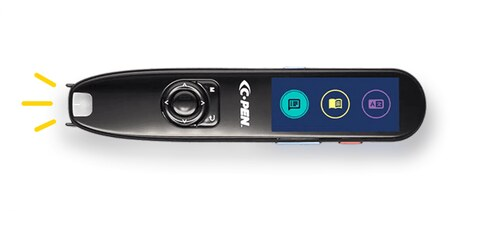
A handheld text reader for scanning printed words and lines. Check how it handles the print size and layout you use.
Explore resource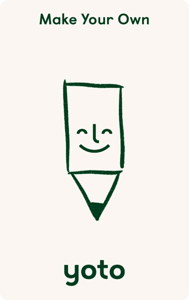
Record family readings or link to audio in a home language for a compatible Yoto player. Pair audio with the book when the illustrations carry part of the story.
Explore resource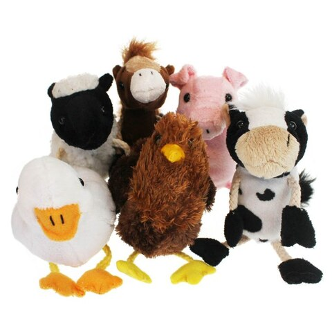
Six farm animals for retelling familiar stories or sharing speaking roles. A small set is a useful starting point for a reading group.
Maker’s product detailsA wooden stage for using finger puppets during a small-group read-aloud or retelling. Puppets can be chosen separately to match the story.
Maker’s product details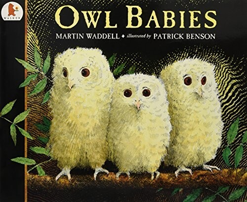
Martin Waddell · Illustrated by Patrick Benson
Walker’s classroom Big Book lets a group see the owls’ changing expressions while joining in with the repeated lines.
Book details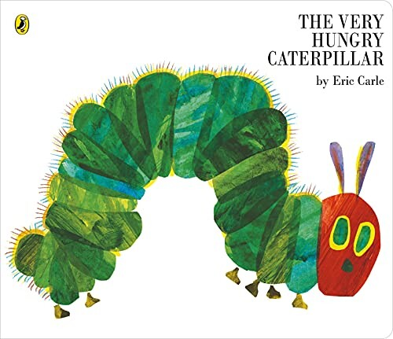
Eric Carle
The publisher’s large board-book edition suits nursery groups. Show the holes and cut pages as children count the food together.
Book detailsUniversity of Edinburgh guidance and early-years literacy resources for deaf, deafblind and visually impaired children, their families and educators.
Early-years resources About the centreAilie Finlay’s sensory-storytelling organisation offers books, ideas and professional learning. Start with a familiar narrative, choose a few meaningful objects or sensations, and give each reader time and a choice about joining in.
Explore My Kind of BookCombines braille, print and pictures so sighted and visually impaired family members can share a book. Check the library’s current borrowing arrangements and which format suits the reader.
Explore ClearVisionTactile pictures and accompanying audio offer another route into illustrated stories for blind and partially sighted readers. Explore the children’s library and check current eligibility and borrowing information.
Explore the children’s libraryPractical literacy ideas for learners who are blind, visually impaired or deafblind. Look for emergent literacy and early-childhood examples, including meaningful objects, tactile materials and opportunities to make choices.
Explore Paths to LiteracyA US-based source of braille books, including formats designed for shared reading. Check language, braille code, shipping and any programme restrictions before ordering from the UK.
Explore SeedlingsThe September 2026 Sensory Stories Step-by-Step event worked through adapting a picturebook with Ailie Finlay. This is a past event: consult the record and current course listings for materials and future sessions.
Read the event record Current SSC coursesBrowse individual editions below. Each card describes the reading format and links to edition details or purchase options where available.
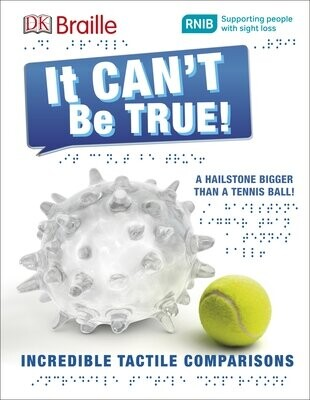
Illustrated facts and comparisons combine print and braille with raised visual details. The information belongs to this edition’s publication period; use the tactile features alongside discussion and check time-sensitive facts against a current source.
Book details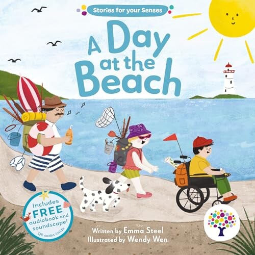
Emma Steel · Illustrated by Wendy Wen
A beach-themed board book offers prompts for a sensory reading, with linked soundscapes. Choose materials and sounds with the reader, introduce them gradually and allow an entirely quiet reading if that is more comfortable.
Book details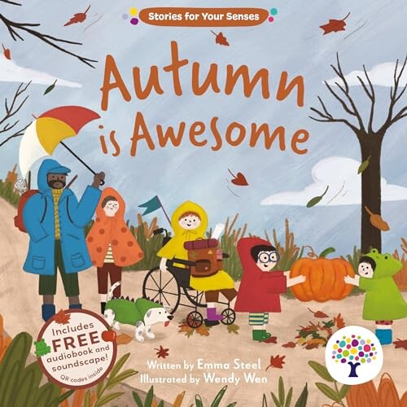
Emma Steel · Illustrated by Wendy Wen
Autumn provides the setting for a short sensory story with opportunities to explore seasonal experiences. The book can support a slow, choice-led reading with familiar objects; participation does not require touching or hearing every suggested element.
Book details
A friendship story from the Little Cherries series. This accessible edition combines illustrated story text with symbol cues, tactile-cover features and a free signed and animated video, available via the publisher’s support resources.
Book details
A symbol-supported yoga story with free audiobook and signed video. The activity pages include seated yoga positions. Its accessible format supports participation but does not imply that all formats suit every reader.
Book detailsCheck the features of the exact edition before buying or borrowing. Options include braille, tactile pictures, symbols, print, audio and signed video. Introduce sensory materials gradually, offer choices and respect a reader’s refusal; more stimulation is not necessarily better access.
Some editions provide QR-linked audio, signed videos or soundscapes. Check the individual publisher page for what is included; these extras do not make every edition a braille book. Choose the format that suits the reader, and keep a quiet option available.
Additional tactile, symbol-supported and easier-reading editions from specialist publishers. These are book recommendations rather than claims that one format suits every reader; check current editions and accessibility features before purchase.
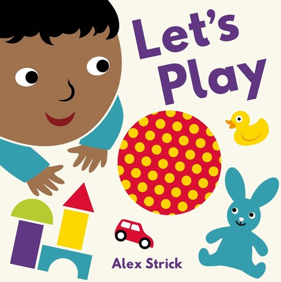
Alex Strick · Illustrated by Annie Kubler and Sarah Dellow
A tactile board book with recognisable textures and braille labels; supports shared exploration for children with visual impairments.
Book details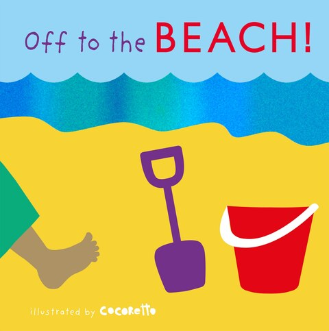
Illustrated by Cocoretto
Tactile seaside story with braille, moving tabs, textures and a scratch-and-sniff element; developed with visually impaired children.
Book details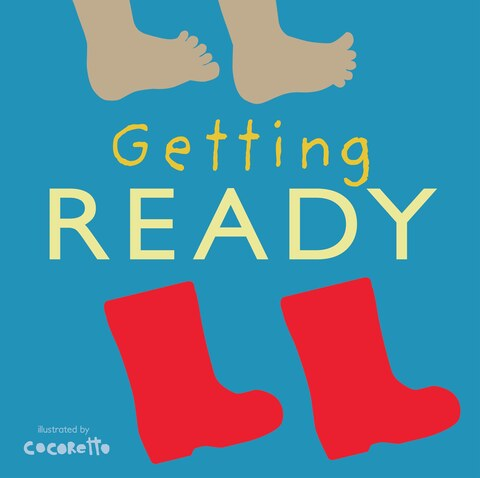
Illustrated by Cocoretto
Touch-and-feel book about morning routines, with interactive elements for shared sensory reading.
Book details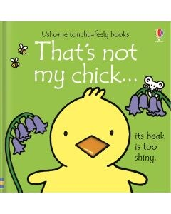
Fiona Watt · Illustrated by Rachel Wells
A touch-and-feel board book with distinctive textures and clearly identifiable shapes.
Book details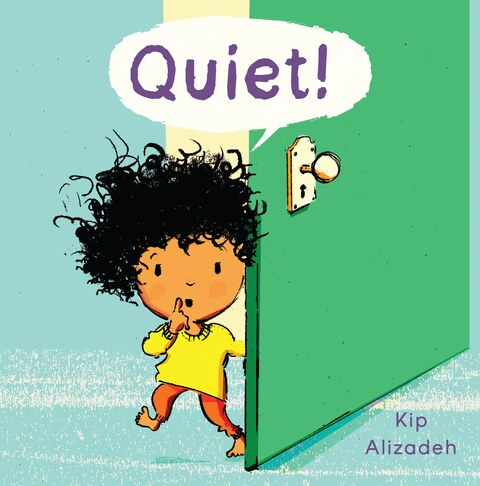
Kip Alizadeh
A picturebook that explores family life through the sounds of a home; useful for discussing listening and auditory experiences.
Book details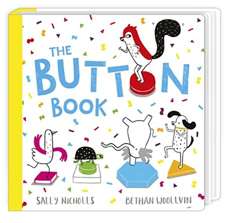
Sally Nicholls · Illustrated by Bethan Woollvin
An interactive picturebook inviting readers to imagine pressing buttons and producing actions or sounds; participation can be adapted to individual preferences.
Book details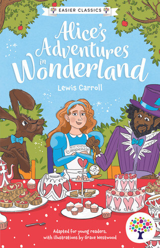
Adapted by Gemma Barder · Illustrated by Grace Westwood
A simplified accessible edition of a classic story; check the edition’s specific reading features before choosing it for a reader.
Book details
Dyslexia-friendly retelling with illustrations and free audio.

Easier-reading adaptation with illustrations and audio support.

Illustrated simplified classic with dyslexia-friendly layout.

An illustrated retelling with shorter text and a glossary.